Technical report (DRAFT for team review, not final)
Team: PES1UG24CS497, PES1UG24CS496, PES1UG24CS549, PES1UG24CS548 Repository: https://github.com/AaryaTedla/pes-ml-hackathon
Items marked [NEEDED: ...] require evidence only the team can supply (screenshots from the demo laptops, AI-use statements). Every number comes from a committed result file; see
report/numbers_sheet.md.
GPS positions are noisy, so a vehicle on one road can appear on a parallel street. Given a trip's GPS points and its own road network, PathSnap decides which road segment (arc) the vehicle was on at each point and reconstructs a connected route. A classifier scores each candidate arc near a GPS point using 18 features (distance, heading, speed, neighbouring points, road geometry). A Hidden Markov Model with Viterbi decoding then chooses the best consistent sequence of arcs using the road graph. The final system is a FastAPI server (laptop 1) that runs the full pipeline and scores the result against the reference route on the server only, plus a browser UI (laptop 2) that shows the predicted route and metrics.
Architecture: laptop 2 browser -> FastAPI on laptop 1 -> reference-free feature preparation -> classifier (tuned Random Forest) -> HMM (multi-hop Viterbi) -> server-only scoring -> GPS, predicted route and aggregate metrics -> browser.
Draft from real outputs in
results/. Every number is inresults/eda/trip_inventory.csv,partition_counts.csvorresults/FEATURES_README.md, and the code issrc/eda.py. Rewrite it in your own words and check each number before it goes in the PDF. Partition used is named in each paragraph, as the guide asks.
The data comes in trips. Each trip has its own folder with four headerless files: .track (lon, lat, time in seconds),
.nodes (lon, lat), .arcs (from-node, to-node) and .route (the reference arc sequence). A row in .track does not correspond to a row in any
other file. Arcs reference nodes by row index, and the route references arcs by row index. Each trip has its own road network, so there is no shared global graph.
We analysed the train partition (80 trips, 208,417 GPS points) and the student_test partition (10 trips, 19,160 points). The 10 evaluator
trips were never opened.
src/labels.py)
and label a candidate positive when it is the aligned arc. These are reference labels, not verified ground truth.(Figures 01 to 06 in results/figures/, interactive maps in results/maps/. Train unless stated.)
map_train_00000054.html).The 18 features are listed in results/FEATURES_README.md. Examples from the train data, rows whose reference arc is among the candidates:
| Feature group | Why | Evidence |
|---|---|---|
Distance to the arc (dist_m, dist_rel, cand_rank) |
Correct arcs are close | Median distance is 5.0 m for the correct candidate and 31.7 m for wrong ones |
Heading vs arc bearing (cos_head, abs_head_diff_deg), speed, moving |
About 95% of arcs have a reverse twin at the same distance, so distance cannot tell them apart. Direction can. | Median cos_head is 0.99 for correct candidates and -0.08 for wrong ones. The nearest arc alone is correct only 51.6% of the time |
Neighbouring points' distance (dist_prev1/2, dist_next1/2, dist_win_mean) |
One noisy point is unreliable. Its neighbours should also be near the right arc. | Used by the classifier as short-range context |
Position along arc, arc length, node degrees (proj_frac, arc_len_m, from_out_deg, to_out_deg) |
Describe where on the arc and whether a junction is near | Context for the transition model |
dt_prev_s |
Flags gaps where heading and speed are less reliable | 6.2% of steps are not 1 s |
The nearest-arc baseline (top-1 distance choice) is only about 51% correct, which shows why a classifier plus sequence decoding is needed.
results/maps/map_train_00000001.html in a browser).results/eda/trip_inventory.csv.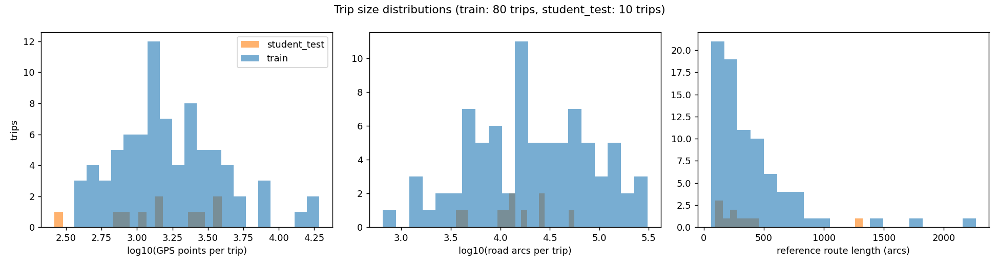
Figure 2.1: trip size distributions (train and student_test)
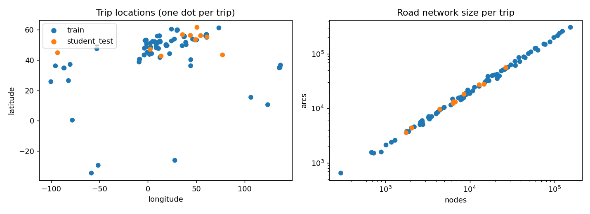
Figure 2.2: trip locations and road-network size
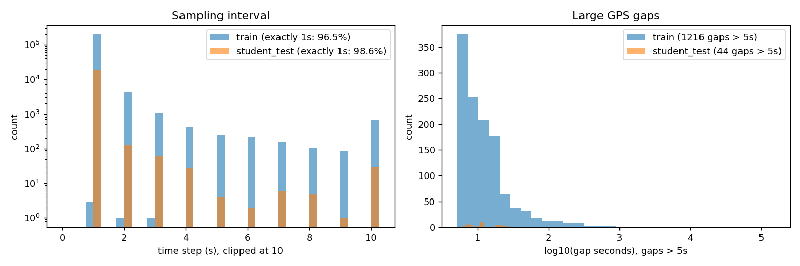
Figure 2.3: sampling intervals and large GPS gaps
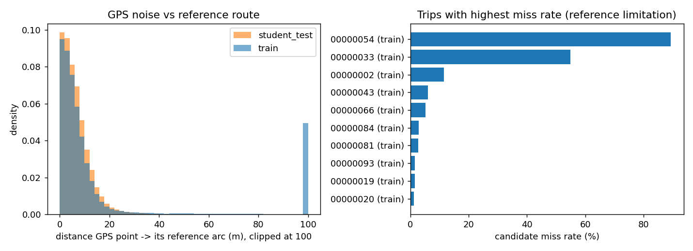
Figure 2.4: GPS noise relative to the reference route, and candidate miss rate per trip
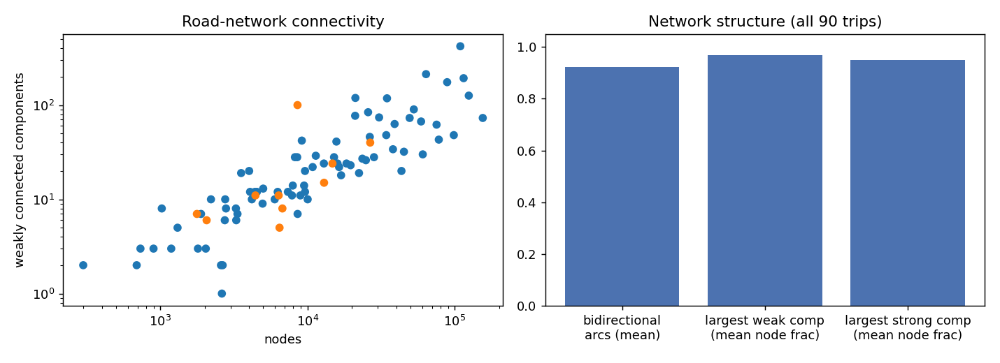
Figure 2.5: road-network connectivity
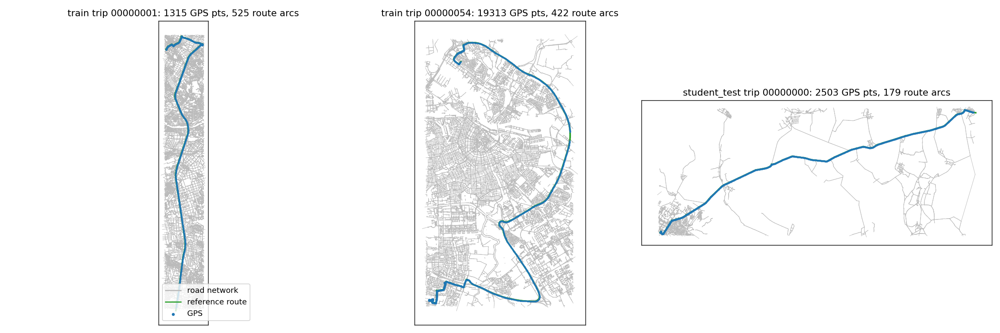
Figure 2.6: GPS tracks, road network and reference route for three trips
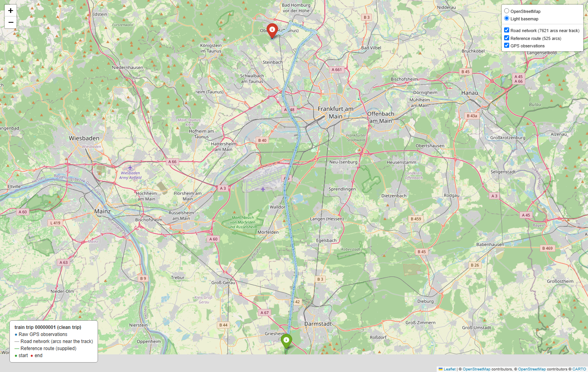
Figure 2.7: Folium map of train trip 00000001 (GPS, road network, reference route)
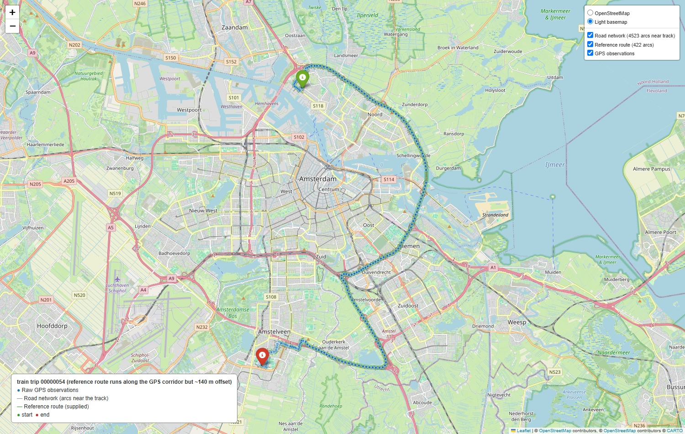
Figure 2.8: Folium map of train trip 00000054, whose reference route runs about 140 m from the GPS corridor
Cross-validation: 3-fold GroupKFold by trip on 40 whole training trips (seed 42). Student-test: the 10 student_test trips, all 244,176 candidate rows. Top-1 is per-point (highest-probability candidate vs the derived reference arc). Macro-F1 and log loss are binary candidate metrics at threshold 0.5. Route continuity is the classifier alone (no HMM) on student_test, using the shared metric in src/evaluate.py; it is not an HMM result. Source: results/models/deadline_all_01/comparison.csv and results/models/route_continuity_by_model.csv.
| Model | Algorithm family | Key configuration | CV macro-F1 | Top-1 (CV / student-test) | Route continuity (student-test, classifier only) | Student-test macro-F1 | Log loss (CV / student-test) | Inference time, student-test (s) |
|---|---|---|---|---|---|---|---|---|
| Logistic Regression | Linear / probabilistic | StandardScaler, max_iter=200, binary log-loss | 0.8784 | 0.8269 / 0.8506 | 0.7383 | 0.8995 | 0.1202 / 0.0780 | 0.15 |
| LightGBM | Boosting | 300 trees, learning_rate=0.1, num_leaves=63, binary log-loss | 0.9067 | 0.8327 / 0.8488 | 0.6821 | 0.9163 | 0.1447 / 0.0999 | 1.38 |
| Random Forest | Bagged trees (ensemble) | 100 trees, max_depth=18, min_samples_leaf=20, Gini; capped at 300k fitting rows | 0.9066 | 0.8377 / 0.8535 | 0.7449 | 0.9178 | 0.0977 / 0.0575 | 2.22 |
| MLP | Neural network | hidden (64,32), batch 2048, up to 30 epochs, Adam; capped at 300k fitting rows | 0.9012 | 0.8301 / 0.8561 | 0.7757 | 0.9159 | 0.0871 / 0.0594 | 0.33 |
| KNN | Instance-based | k=25, distance-weighted, ball-tree, StandardScaler; capped at 150k fitting rows | 0.8847 | 0.8088 / 0.8274 | 0.7624 | 0.9004 | 0.2261 / 0.1088 | 448.41 |
Nearest-arc baseline Top-1: 0.5123 (CV mean), 0.5081 (student-test). Per-fold Top-1 standard deviation is 0.012 to 0.019, larger than the gaps between the top three models, so the ranking is narrow. Inference time covers candidate scoring only (not feature generation or HMM decoding); KNN's cheap fit hides its slow prediction.
Owner: Aarya, PES1UG24CS496. All values below come from
results/models/deadline_all_01/ and results/models/tuning_deadline_02/.
The deadline experiment used seed 42 to select 40 complete training trips. After retaining pt_has_pos=1, 1,103,014 candidate rows were available. The 18 features describe candidate distance, heading, speed, neighbouring GPS evidence, geometry and endpoint degree. IDs, labels and the filter were excluded. Three-fold GroupKFold held out entire trips. Preprocessing was fitted inside each fitting partition. RF/MLP used up to 300,000 fitting rows and KNN up to 150,000; samples retained full candidate groups for each selected observation. LogReg and LightGBM used all eligible fitting rows. This is a time-budgeted comparison with differing per-model caps, not an equal-compute benchmark.
Student-test evaluation used all 244,176 candidate rows over 19,160 points in 10 trips, including points without a positive candidate. Reference labels are derived by route alignment and are not independently verified physical truth. The rebuilt training table's 210-point coverage discrepancy is documented in the training provenance file. This run does not use all 80 available training trips; that limitation should remain explicit in the final report.
The predefined rule selected highest mean fold-level point Top-1, with lower mean candidate log loss breaking exact ties. Student-test did not choose the winner. Macro-F1/precision/recall are binary candidate metrics at threshold 0.5, not multiclass road-ID metrics. Point Top-1 takes the maximum positive-class probability within each observation's candidate set.
| Model | CV Top-1 | Student Top-1 | CV macro-F1 | Student macro-F1 | CV log loss | Student log loss |
|---|---|---|---|---|---|---|
| Logistic Regression | 0.82690 | 0.85057 | 0.87841 | 0.89946 | 0.12020 | 0.07803 |
| LightGBM | 0.83265 | 0.84880 | 0.90670 | 0.91633 | 0.14471 | 0.09993 |
| Random Forest | 0.83765 | 0.85350 | 0.90664 | 0.91783 | 0.09774 | 0.05753 |
| MLP | 0.83006 | 0.85611 | 0.90122 | 0.91594 | 0.08710 | 0.05937 |
| KNN | 0.80877 | 0.82740 | 0.88474 | 0.90038 | 0.22608 | 0.10875 |
Nearest-arc Top-1 was 0.51233 in mean CV and 0.50809 on student-test. All five models exceeded these matching baselines. RF's lead over LightGBM was only 0.00500 (0.50 percentage points); no statistical significance is claimed. MLP achieved the best student-test Top-1, but RF won under the declared CV rule. Candidate F1 and Top-1 rank models differently because they measure different decisions. Actual confusion matrices, precision and recall are in metrics.csv.
| Model | Mean CV fit seconds | Mean CV inference seconds | Student inference seconds |
|---|---|---|---|
| Logistic Regression | 4.39 | 0.22 | 0.15 |
| LightGBM | 11.94 | 2.23 | 1.38 |
| Random Forest | 37.71 | 3.35 | 2.22 |
| MLP | 25.14 | 0.51 | 0.33 |
| KNN | 0.47 | 778.20 | 448.41 |
These times cover fitting or candidate scoring, not feature generation or HMM decoding. KNN's cheap fit hides its expensive neighbour search during prediction.
All models used random seed 42 where applicable. Model-specific parameter JSONs record remaining defaults. Student-test scores exceed mean CV scores here; this alone establishes neither absence of overfitting nor proof of underfitting. The report should not invent training-validation gaps absent logged evidence. Route continuity and HMM sequence results belong to the decoder experiments.
The selected RF was tuned with Optuna TPE, minimising mean three-fold training CV log loss. The search covered max_depth in [10,22] and min_samples_leaf in [10,50], retaining 100 trees and the same fit caps. Of 25 requested trials, six completed before the timeout stopped further trials. The first five are startup trials; only the sixth uses the subsequent TPE proposal mechanism. Search time was 676.67 seconds because timeout checks occur between trials. An earlier interrupted study is preserved separately and is not counted as a completed 25-trial search. No evaluator data entered optimisation.
Best trial: max_depth=12, min_samples_leaf=16, CV log loss=0.0807695.
| Metric | Untuned RF | Tuned RF |
|---|---|---|
| Mean CV Top-1 | 0.83765 | 0.83640 |
| Mean CV log loss | 0.09774 | 0.08077 |
| Student Top-1 | 0.85350 | 0.85402 |
| Student macro-F1 | 0.91783 | 0.91802 |
| Student log loss | 0.05753 | 0.05779 |
Tuning improved its CV objective but produced mixed generalisation results. Student point selection improved by 10 points out of 19,160, only 0.052 percentage points; student log loss slightly worsened. The tuned artifact was selected on CV log loss, not by choosing whichever version looked better on student-test. No broad superiority or guaranteed calibration is claimed.
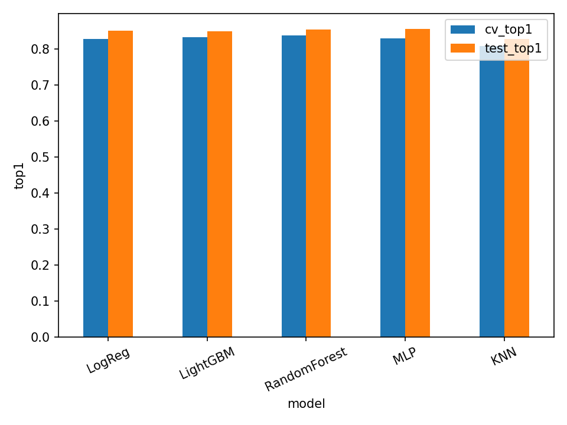
Figure 3.1: per-point Top-1 accuracy by model
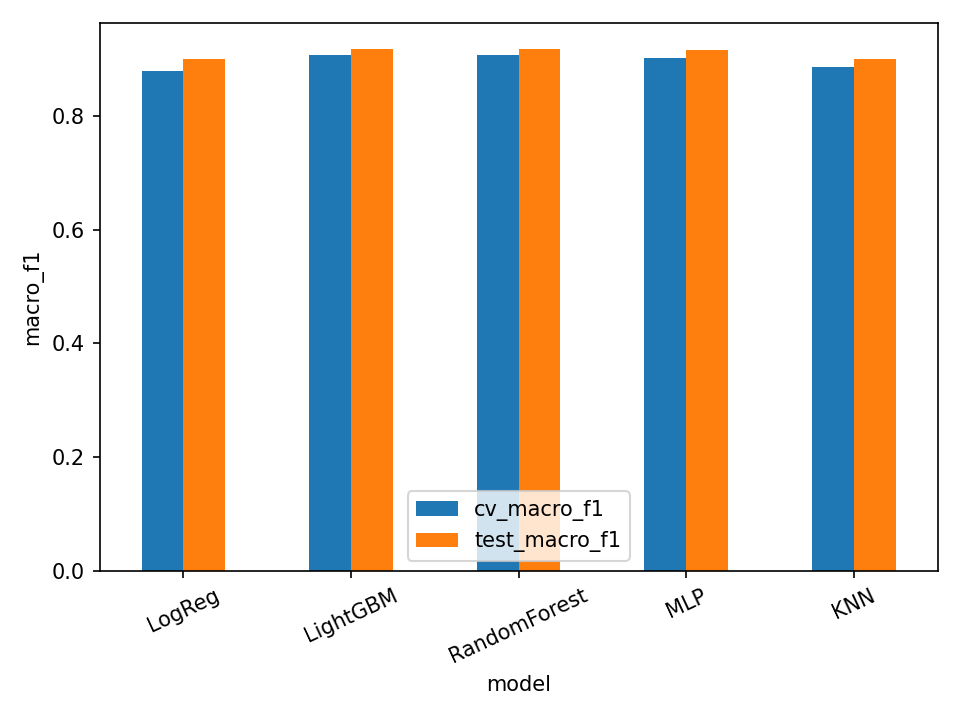
Figure 3.2: macro-F1 by model
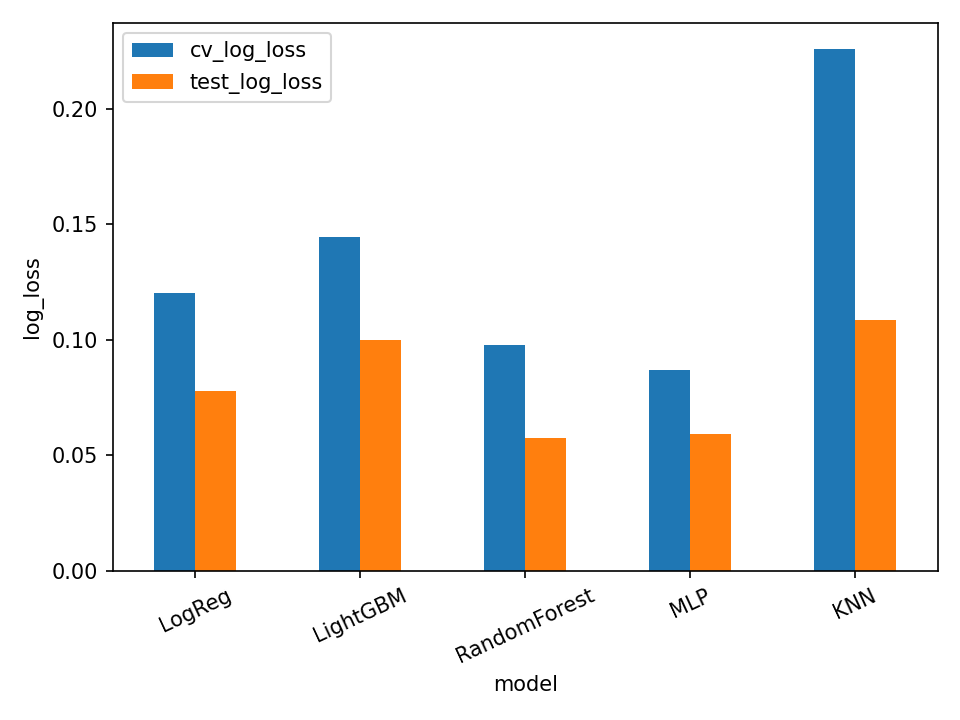
Figure 3.3: log loss by model
Only the MLP produces an epoch-wise training history (results/models/deadline_all_01/MLP_loss_curve.csv); no curves are drawn for the other models. [NEEDED: per-model answers to the compulsory questions A, B and C of section 3.2 (suitability, hyperparameters and loss, results, over- or under-fitting evidence), written by the model owner.]
Draft built from the committed results in
results/. The team must review it, rewrite it in its own words and be able to explain every statement. All numbers below come fromresults/hmm_decoder_comparison_model.csvand its per-trip file unless noted.
A GPS point can be close to several roads, so choosing a road independently for each point can make the route jump between them. We tested whether using the neighbouring points' choices resolves this.
At each GPS point the hidden states are its candidate directed road arcs. We keep point_idx and arc_id with every candidate, so
the decoder returns one arc id per GPS point (or -1 when a point has no candidate). Each trip uses its own road graph. The reference
route is used only for scoring after prediction and never as decoder input.
The emission score of a candidate is the log of the classifier's probability that it is the correct arc. The classifier is the tuned
Random Forest (artifacts/model.joblib, trained on 40 training trips; see section 4). Before the trained model was available we
used a heuristic stand-in, softmax(-dist_m/10 + 3*cos_head) per GPS point. Those earlier results are kept in
results/hmm_decoder_comparison_mock.csv as a baseline and are not the final results.
Both decoders are compared on the same trips, with the same probabilities.
Fixed-transition decoder (src/hmm_fixed.py, config artifacts/hmm_fixed_config.json). A log score of 0 for staying on the same
arc, -1.0 for moving to a directly adjacent arc (the previous arc ends where the next starts), and -8.0 for any other movement. It is cheap,
but moving across several short road segments between two samples is scored like an unrelated jump. The sequence restarts after a time
gap above 30 s, a missing-candidate point, or a nonpositive or non-finite time difference.
Multi-hop decoder (src/hmm.py, config artifacts/hmm_config.json, used by the API). It allows travel through intermediate arcs. A
memoised, depth-limited breadth-first search on directed arc connections finds how many arcs apart two candidates are:
depth = max_hops + floor(min(dt, gap_s) / gap_hop_s)
Staying on an arc costs 0; reaching another arc in h hops costs hop_penalty * h; an immediate move to the reverse arc costs
uturn_penalty; if the arc is not found within the search depth the decoder applies jump_penalty. The tuned values are hop_penalty=2,
jump_penalty=20, uturn_penalty=16, max_hops=5, gap_s=120 s, gap_hop_s=5 s. After a gap above 120 s, transition costs are set to zero so the new
point is independent of the previous choice. Points with no candidate stay -1 and decoding continues across them using the elapsed time.
For nonpositive time differences it substitutes 1 s; it has no explicit check for non-finite timestamps.
These costs are dimensionless scores. A hop is an arc transition, not a distance in metres, and neither active decoder computes metric shortest paths. Both use finite penalties, so decoding can recover from poor candidate sets, but a disconnected result is still possible. Neither decoder inserts connector arcs between predictions.
V_t(j) = emission_t(j) + max_i [ V_(t-1)(i) + transition_t(i, j) ]
For each candidate j we keep the best score of a sequence ending there and the previous candidate that gave it. After the forward pass we backtrack from the best final candidate. This differs from picking the largest emission at every point: a slightly weaker local choice can belong to a better complete sequence. Working with log scores avoids multiplying many small probabilities.
Trips and tuning. 54 whole trips: 22 training trips labelled TUNE, 22 labelled VAL and the 10 student_test trips (seed 0).
Training trips with a candidate miss rate above 5%, or with more than 8,000 points, are excluded, so the comparison does not cover every
training trip or the longest trips. Both decoders were tuned with the same coordinate search on the TUNE trips only, using the
trained model's probabilities. The search logs are results/hmm_tuning_multihop_model.csv and results/hmm_tuning_fixed_model.csv.
VAL and student_test were not used to choose any setting. Evaluator trips were never used. (An earlier comparison on stand-in probabilities tuned the two
decoders on different trips; that limitation no longer applies.)
Metrics. Point accuracy counts correct arc ids on points whose derived reference arc is within 60 m of the GPS point. Reference
labels come from aligning points to the route and are not independently verified physical truth. Direct continuity (from src/evaluate.py)
is the fraction of changes in the predicted arc where the first arc ends at the next arc's start node; it does not credit a connection through
intermediate arcs, so a valid multi-hop movement lowers it. The sequence metric is the fraction of non-overlapping 50-point windows in which
every prediction matches the reference label; it uses all points, without the 60 m mask. Averages give each trip equal weight.
| Pipeline | Point accuracy | Exact 50-point windows | Direct continuity | Trips better / worse than classifier-only |
|---|---|---|---|---|
| Classifier only (tuned Random Forest) | 85.67% | 22.40% | 72.57% | n/a |
| Fixed-transition HMM | 88.92% | 28.16% | 97.85% | 19 / 2 |
| Multi-hop HMM | 91.99% | 42.66% | 88.89% | 22 / 0 |
| Pipeline | Point accuracy | Exact 50-point windows | Direct continuity | Trips better / worse than classifier-only |
|---|---|---|---|---|
| Classifier only | 87.80% | 24.82% | 75.56% | n/a |
| Fixed-transition HMM | 91.42% | 31.42% | 98.66% | 20 / 0 |
| Multi-hop HMM | 94.10% | 44.20% | 92.18% | 22 / 0 |
| Pipeline | Point accuracy | Exact 50-point windows | Direct continuity | Trips better / worse than classifier-only |
|---|---|---|---|---|
| Classifier only | 86.52% | 26.91% | 74.61% | n/a |
| Fixed-transition HMM | 88.79% | 30.75% | 98.53% | 8 / 1 |
| Multi-hop HMM | 91.78% | 39.53% | 90.62% | 9 / 1 |
"Worse" means more than 0.5 percentage points below classifier-only.
Live API check (results/api_hmm_check_model.csv): the API in hmm mode on all 10 student_test trips gives mean point accuracy 0.865 for the
classifier alone and 0.917 after the multi-hop HMM, with mean continuity 0.906.
Timing. Decoding all 22 VAL trips took 16.8 s with the multi-hop decoder and 4.7 s with the fixed decoder in the committed run, excluding feature preparation and API overhead. Times depend on the machine and on what else is running (an earlier run of the same code was faster), so we report them only as a rough comparison: multi-hop was about 2 to 4 times slower than fixed transitions, and both are fast enough for the live demo.
Reproduce: python src/compare_decoders.py --prob model (decoder comparison) and python src/eval_hmm.py --mode tune --prob model [--decoder fixed] --save-config (tuning).
These are report-only illustrations made with the trained model's probabilities (artifacts/model.joblib) and the tuned
decoder settings. They include the reference route, so they must not be used as API or UI artifacts. Both examples are training
trips, and their split is stated below. They illustrate behaviour and are not held-out evidence. No evaluator trips were read.
Each comparison has three panels: classifier only, fixed-transition HMM and multi-hop HMM (the one the API uses). Every panel shows the GPS points (blue), nearby road arcs (grey), the supplied reference route (green halo), the predicted arcs (red), start and end markers, a legend and a layer control. Orange rings mark points whose chosen arc differs from the derived reference label, using the same 60 m mask as section 5. Reverse-direction arcs can have identical geometry, so the rings show errors that route lines alone hide. The accuracy and continuity in each panel heading are whole-trip values, not values for the zoomed window. The maps use the repository's local Leaflet files and no external basemap (the grey background is intentional; the roads drawn are the supplied trip network).
| Pipeline | Whole-trip accuracy | Direct continuity |
|---|---|---|
| Classifier only | 65.13% | 51.05% |
| Fixed HMM | 85.62% | 91.35% |
| Multi-hop HMM | 91.07% | 77.17% |
The fixed decoder corrects 239 classifier errors and introduces 21 others. The detail window (points 291 to 331) is the 41-point stretch with the most points corrected by fixed decoding. It is an illustrative selected region, not a random sample.
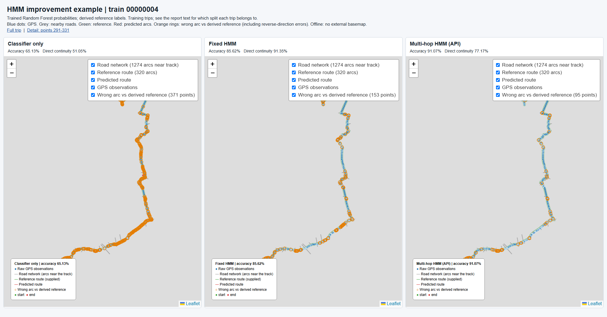
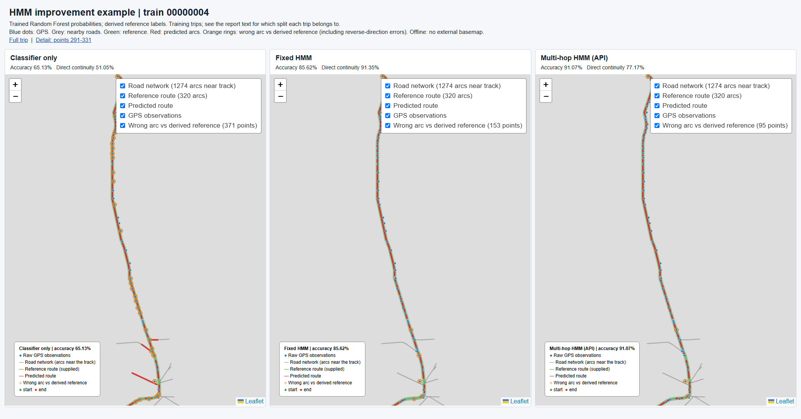
| Pipeline | Whole-trip accuracy | Direct continuity |
|---|---|---|
| Classifier only | 92.16% | 76.71% |
| Fixed HMM | 90.75% | 95.34% |
| Multi-hop HMM | 96.80% | 82.88% |
The fixed decoder corrects 123 classifier errors but introduces 164, a net loss of 41 correct point assignments, even though direct continuity rises. The detail window (points 2532 to 2572) is the stretch with the most points where the classifier is right and fixed decoding is wrong. Some errors are direction errors on the same geometry, so use the orange rings as well as the route overlays. These are observed label changes; the figures do not establish the physical cause of each error.
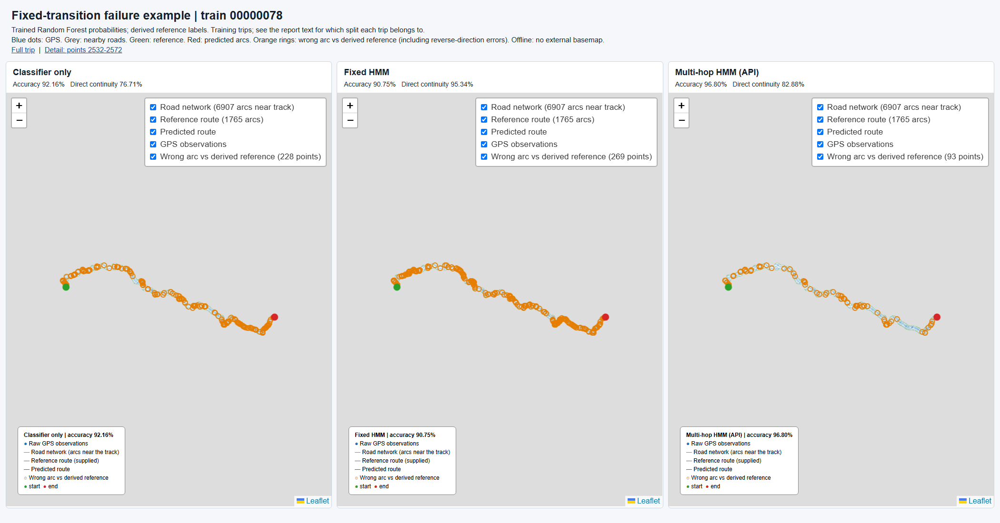
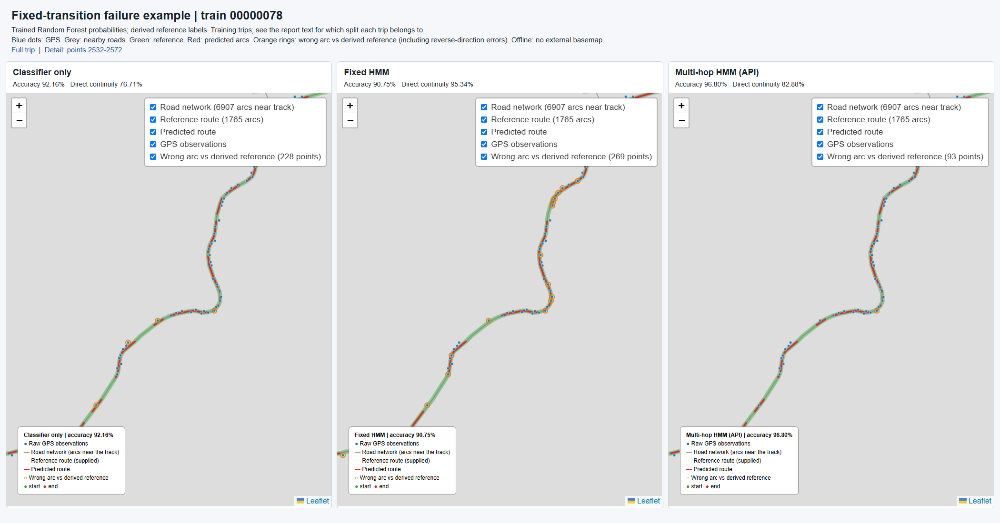
results/figures/folium_map_*.png: EDA maps of three trips (GPS, road network, reference route) with an online basemap.results/maps/map_*.html: the interactive versions of those maps.python src/make_hmm_figures.py --data-root data --tag NEW_UNIQUE_TAG --prob model --improve-trip 00000004 --regress-trip 00000078
The tag must be new (the script refuses to overwrite existing output). It writes HTML, predictions and a manifest with metrics, configs and file hashes
under results/maps/. Screenshots can be added with --screenshots (needs Playwright) or by opening the comparison page with ?view=overview or ?view=detail
in a browser. The script now also runs on Python 3.10. AI assistance was used for the generator and these notes.
Implemented in api/ (FastAPI) and ui/ (browser workspace served by the API at /ui/). GET /trips lists the configured trips; POST /predict {trip_id}
builds features with prepare_trip (which never opens the .route file), runs the classifier and the HMM, and only then computes aggregate scoring against the
reference on laptop 1. The response carries GPS points, the predicted route and aggregate metrics, never the reference route or labels. Every request is logged on the API
terminal with a request id, trip id, number of points, elapsed time and accuracy. tests/test_no_leakage.py shows that the features are identical with and without the
route file, and a fresh clone of the public repository ran all 10 student_test trips in hmm mode (pipeline classifier + HMM/Viterbi).
| Deployment evidence | Value / source |
|---|---|
| Final commit | see git log of the submitted repository |
| Prediction modes | nearest (development baseline), classifier, hmm (final); hmm refuses to start without artifacts/model.joblib |
All 10 student_test trips in hmm mode |
results/api_hmm_check_model.csv: mean accuracy 0.865 (classifier alone) to 0.917 (with HMM), mean continuity 0.906 |
| Laptop-to-laptop connection (development mode) | A second laptop on the same Wi-Fi called the API on laptop 1 (port 8000); the requests appear in laptop 1's API log with the second laptop's client IP and matching request ids |
| Final-mode demonstration on laptop 2 | [NEEDED: repeat with PATHSNAP_MODE=hmm and capture the screenshots below] |
[NEEDED: Figure 7-A] Laptop 2 UI showing a completed trip (GPS, predicted route, metrics) with the pipeline shown as classifier + HMM/Viterbi.
[NEEDED: Figure 7-B] Laptop 1 API terminal showing the matching request id, the second laptop's client IP, trip, number of points, time and accuracy.
Reproduce: python -m uvicorn api.main:app --host 0.0.0.0 --port 8000 with PATHSNAP_MODE=hmm; set PATHSNAP_TRIPS_DIR to the folder with the evaluation trips.
A Windows firewall rule for TCP port 8000 and a shared network are required; scripts/check_all_trips.py --api http://<laptop-1-ip>:8000 checks all trips from the second laptop.
All reported numbers come from committed result files and can be regenerated with the scripts listed in the repository README. Learned preprocessing was fitted on training data only, cross-validation folds are grouped by trip, the evaluator trips were never opened during development, and the reference route is never used by the prediction path.
[NEEDED: AI-use disclosure.] The event policy requires each member to state which AI tools helped with which parts of the work (for example code, tests, report drafting) and what they checked themselves. Each member should write their own entry here and be able to explain their code, experiments and results.